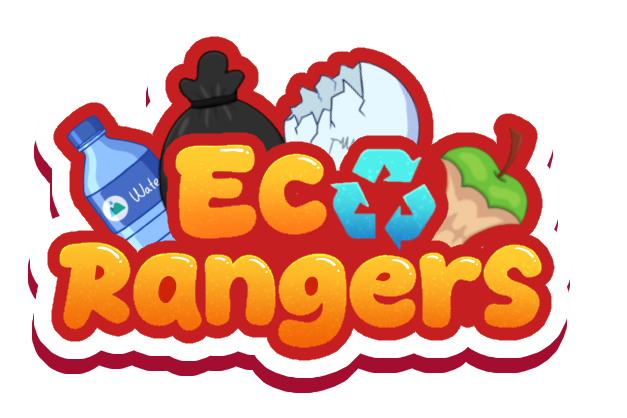
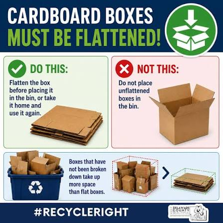
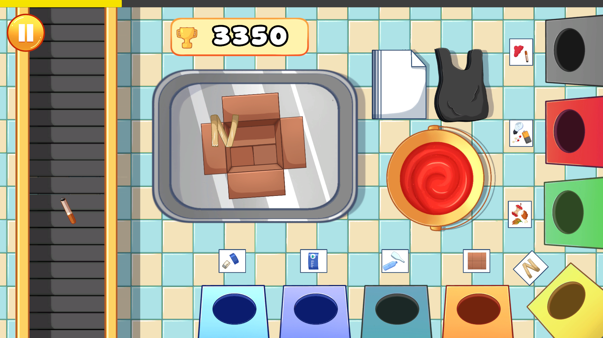
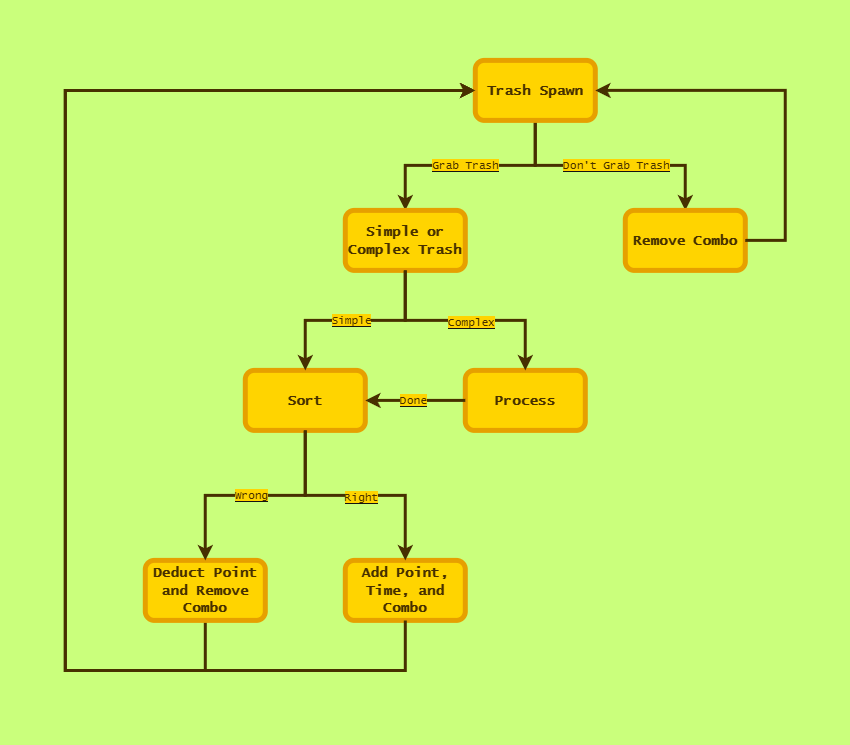

Play EcoRangers on itch.io
Play EcoRangers on itch.io
01
Game Designer
- Game Concept and Core Mechanics
- Game Core Loops and Progression System
- Game Balancing
- Level Design
- Tutorial & Instructional Design
- UI Design Assist
GAME PROJECT

EcoRangers is a 2D puzzle arcade game that turns waste preprocessing and sorting into an engaging gameplay experience inspired by waste-processing practices in Indonesia.
01 — PROJECT DETAILS
Detailed documentation of EcoRangers' design, mechanics, systems, and development.
02 — MY CONTRIBUTIONS
03 — DESIGN APPROACH
Most trash-sorting games focus only on sorting waste, overlooking what happens before it reaches that stage. This makes waste processing feel simpler than it actually is.
EcoRangers expands the idea of trash sorting by turning waste preprocessing into part of the gameplay. Players learn that different types of waste require different preparation before they can be sorted correctly. The goal is to make learning about waste management feel natural and fun without making it feel like a lesson.
Inspired by Flash-era and casual mobile games, EcoRangers uses simple, familiar gameplay to show the variety in how waste is handled and processed. The mechanics are based on waste-processing practices in Indonesia, aiming for a classic and friendly feel that is easy to pick up and play.


04 — CORE GAMEPLAY LOOP
